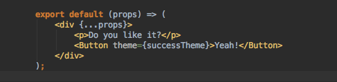
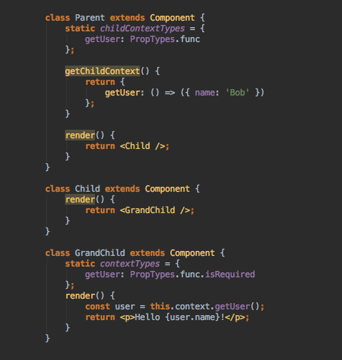

UI-кит. Как загарпунить белого кита и не утонуть в коде
Ярослав Иванов Devexperts FrontEnd-Team
Workflow
Дизайн спецификации, которые мы получаем от дизайн-команды →Разработка статического прототипа согласно спецификации (FrontEnd-команда) →Окончательная верстка + добавление функциональности (RIA-команда) →Тестирование (QA) → Production...
DX-Trade
Технологии, использованные при создании прототипа:
React JS
BEM
Vanilla JS
Gedik
Технологии, использованные при создании прототипа:
Handelbars
BEM
Vanilla JS
Phinom
Технологии, использованные при создании прототипа:
React JS
CSS modules
Vanilla JS
TOS Learning Center
Технологии, использованные при создании прототипа:
React JS
CSS modules
Vanilla JS
В production используются react-компоненты, которые вставляются в верстку шаблонов CMS.
Проблема переиспользуемости компонентов как ее решал Walmart
Проблема переиспользуемости компонентов как ее решал Walmart
Компоненты должны версионироваться, легко устанавливаться и обновляться.
Все компоненты находятся во внутреннем npm реестре, что позволяет использовать
определенные их версии не боясь, что приложение поломается.
Необходимо соблюдать согласованную структуру в пакетах и стандарты для сотен компонентов.
Electrode и React Storybook
Проблема переиспользуемости компонентов как ее решали мы
Были созданы дыв вида UI-китов:
dx-components — общий для проектов Frontend-команды
dx-ui — под проект DX-Trade и его вайтлейблов
Оба кита версифицированы и подключаются в нужный проект как bower-зависимости
Проблема переиспользуемости компонентов как ее решали мы
Слева и справа используется один и тот-же модифицированный компонент Calendar из пакета dx-components
UI-Kit что это и зачем он нужен
UI-элементы
UI-элементы. Должны выглядеть одинаково на любой платформе
UI-элементы. Иногда их просто нет среди стандартных
От CSS к CSS-модулям
CSS — начало
SASS
SASS превратил CSS в язык программирования, для препроцессингового движка реализующего в таблицах стилей
вложенность, переменные, миксины, расширения и логику. Так что стало возможным лучше организовывать CSS-файлы
разбивая огромную простыню CSS-кода по более мелким файлам.
БЭМ
При использовании этой методологии мы можем быть уверены что className уникален и что за счет соглашения Block,
Element, Modificator мы снижаем риск специфического отображения.
БЭМ — не все так гладко
Процедура выбора className стала очень кропотливой и отнимает достаточно большое количество времени.
Длинные имена классов раздувают разметку.
Необходимо явно расширять каждый компонент интерфейса при каждом повторном использовании.
Излишне семантическая разметка.
БЭМ — не все так гладко
CSS-модули
Динамическое создание имен классов для каждого локально заданного стиля.
CSS-модули являются способом автоматизации BEM-нотации за счёт
генерирования уникального className, которое не станет конфликтовать ни с одним другим, даже если будет
использоваться одно и то же имя.
CSS-модули
Одиночный класс
widget.css
widget.js
Несколько классов
widget1.css
widget1.js
Комбинация классов
widget2.css
widget2.js
Вложенность классов
widget3.css
widget3.js
Композиция
util.css
widget4.css
widget4.js
Темизация UI компонетов. react-css-themr
А что если переиспользуемый компонент будет идти без стилей, а нужные для компонента стили мы будем подключать
как зависимость?
Подход библиотеки react-css-themr состоит из провайдера и декоратора. Провайдер задает тему через контекст, а
декоратор добавляет нашему компоненту логику чтобы понять какая тема будет использоваться в нем или как она
будет скомпонована в зависимости от конфигурации контекста и свойств.
Как этим пользоваться?
Допустим мы создали компонент который хотим темизировать. Для этого мы должны передать декоратору themr
уникальный идентификатор:
Button.js
Компонент определяет API для темизации который состоит из трех имен классов button, icon и content. И теперь мы
можем использовать компонент button например с темой success в которой мы определили стили для button, icon и
content в файле successButton.css:
SuccessButton.js

Также можно определить базовый компонент с дефолтной темой:
Button.js
В приведенных выше примерах мы темизируем каждый компонент по отдельности. Но можно определить тему для
всего
приложения и передать компонентам соответствующие им темы
Кастомизируемые UI-компоненты
Proxy-компонент
Пишем компонент более высокого уровня:
Далее мы используем Button:
Или даже так:
Style-компонент
Primary кнопка:
Чтобы не заниматься копипастой можно определить компоненты так:
Использование этих компонентов вернет одинаковый результат:
Layout-компонент
Родительский компонент, который отодражает два компонента горизонтально:
Мы можем сделать так чтобы он никогда не обновлялся, при этом не прорывая жизненные циклы внутренних компонентов:
Container-компонент
Дано: компонент CommentList
Разделим получение данных и рендеринг обернув его в контейнер:
Higher Order Component
Начнем с простого компонента Greeting
Если он получит props.name, он отрендерит данные. В противном случае он отрендерит “Connecting…”.
Higher Order Component
Теперь немного более высокий порядок:
Higher Order Component
Далее мы оборачиваем компонент в эту функцию:
WOW! Теперь наш компонент Greeting умеет получать данные...
Это очень мощный шаблон, чтобы компонент мог получать данные и раздавать их любому количеству простых
компонентов.
Dependency Injection. Контекст в React
Разница между контекстом и свойствами в том, что контекст доступен всем потомкам, а свойства — только тому
компоненту, которому они переданы.
Рассмотрим компонент Parent:

В компоненте Parent мы реализовали следующие вещи:
Статическое свойство childContextTypes, которое описывает свойства, которые будут доступны всем потомкам.
Метод getChildContext(), возвращающий конкретное значение контекста.
Компонент GrandChild реализует статическое свойство contextTypes, описывающее, какие свойства контекста
будет использовать компонент (доступны через this.context).
Компоненту Child не нужно передавать контекст вниз в компонент GrandChild. В этом отличие от свойств, которые
нужно передавать по цепочке вручную.
Dependency Injection (DI)
Смысл DI в том, чтобы иметь зависимости от абстрактных идей, вместо конкретных реализаций. Это позволяет
тестировать код и увеличивает возможность повторного использования.
Рассмотрим компонент RandomNumber отображающий случайное число от 1 до max:
Давайте посмотрим, как будет выглядеть этот компонент, если мы используем контекст:
Теперь мы не зависим от Math.random и Math.round и можем заменить их своими собственными реализациями и передать
их через контекст.
Мы можем расширить наш пример с генератором случайных чисел до любого сервиса:
С помощью генераторов ES7 мы можем создать отличную абстракцию для DI в React.
Давайте рассмотрим два генератора:
@inject — содержит contextTypes компонента.
@provide — описывает childContextTypes компонента и связывает контекст с данными.
Здесь мы воспользуемся рассмотренным выше паттерном HOC. Функции (декораторе), которая принимает компонент в
качестве параметра и возвращает компонент.
UI-кит. Как загарпунить белого кита и не утонуть в коде